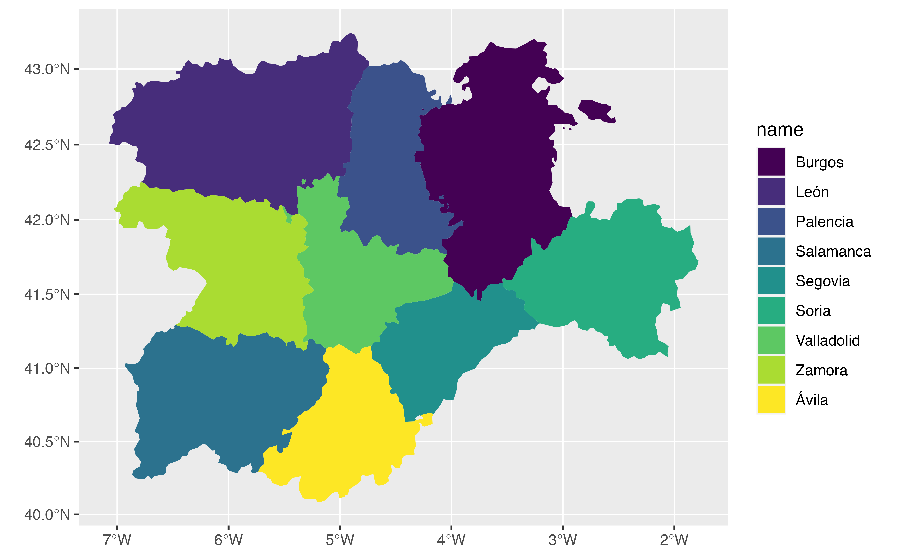
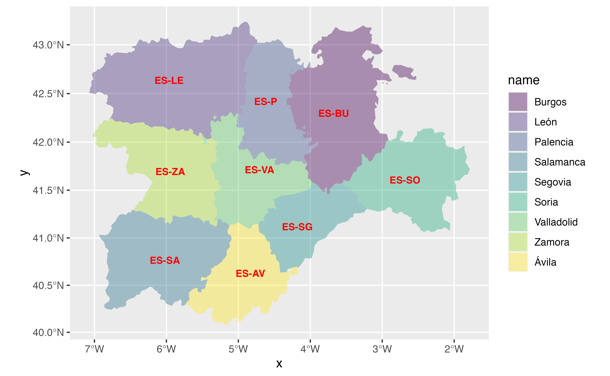
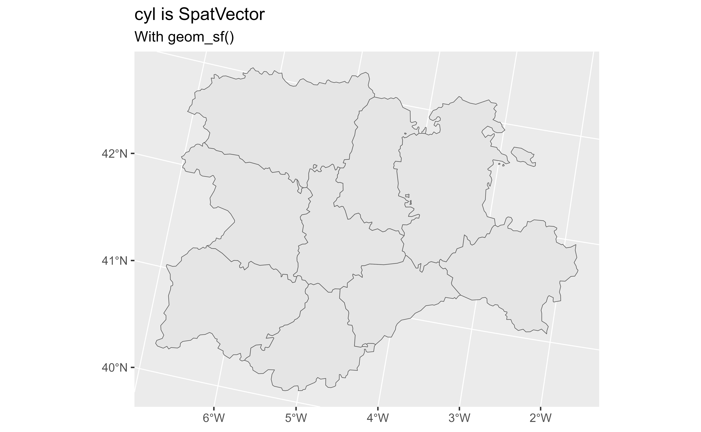

Wrappers of ggplot2::geom_sf() family used to visualise SpatVector objects
(see terra::vect()).
Usage
geom_spatvector(
mapping = aes(),
data = NULL,
na.rm = FALSE,
show.legend = NA,
...
)
geom_spatvector_label(
mapping = aes(),
data = NULL,
na.rm = FALSE,
show.legend = NA,
...,
nudge_x = 0,
nudge_y = 0,
label.size = 0.25,
inherit.aes = TRUE
)
geom_spatvector_text(
mapping = aes(),
data = NULL,
na.rm = FALSE,
show.legend = NA,
...,
nudge_x = 0,
nudge_y = 0,
check_overlap = FALSE,
inherit.aes = TRUE
)
stat_spatvector(
mapping = NULL,
data = NULL,
geom = "rect",
position = "identity",
na.rm = FALSE,
show.legend = NA,
inherit.aes = TRUE,
...
)Arguments
- mapping
Set of aesthetic mappings created by
aes(). If specified andinherit.aes = TRUE(the default), it is combined with the default mapping at the top level of the plot. You must supplymappingif there is no plot mapping.- data
A SpatVector object, see
terra::vect().- na.rm
If
FALSE, the default, missing values are removed with a warning. IfTRUE, missing values are silently removed.- show.legend
logical. Should this layer be included in the legends?
NA, the default, includes if any aesthetics are mapped.FALSEnever includes, andTRUEalways includes.You can also set this to one of "polygon", "line", and "point" to override the default legend.
- ...
Other arguments passed on to
ggplot2::geom_sf()functions. These are often aesthetics, used to set an aesthetic to a fixed value, likecolour = "red"orlinewidth = 3.- nudge_x, nudge_y
Horizontal and vertical adjustment to nudge labels by. Useful for offsetting text from points, particularly on discrete scales. Cannot be jointly specified with
position.- label.size
Size of label border, in mm.
- inherit.aes
If
FALSE, overrides the default aesthetics, rather than combining with them. This is most useful for helper functions that define both data and aesthetics and shouldn't inherit behaviour from the default plot specification, e.g.borders().- check_overlap
If
TRUE, text that overlaps previous text in the same layer will not be plotted.check_overlaphappens at draw time and in the order of the data. Therefore data should be arranged by the label column before callinggeom_text(). Note that this argument is not supported bygeom_label().- geom
The geometric object to use to display the data, either as a
ggprotoGeomsubclass or as a string naming the geom stripped of thegeom_prefix (e.g."point"rather than"geom_point")- position
Position adjustment, either as a string naming the adjustment (e.g.
"jitter"to useposition_jitter), or the result of a call to a position adjustment function. Use the latter if you need to change the settings of the adjustment.
Details
These functions are wrappers of ggplot2::geom_sf() functions. Since a
fortify.SpatVector() method is provided, ggplot2 treat a SpatVector
in the same way that a sf object. A side effect is that you can use
ggplot2::geom_sf() directly with SpatVectors.
See ggplot2::geom_sf() for details on aesthetics, etc.
See also
Other ggplot2 utils:
autoplot.Spat,
fortify.Spat,
geom_spat_contour,
geom_spatraster_rgb(),
geom_spatraster(),
stat_spat_coordinates()
Examples
# \donttest{
# Create a SpatVector
extfile <- system.file("extdata/cyl.gpkg", package = "tidyterra")
cyl <- terra::vect(extfile)
class(cyl)
#> [1] "SpatVector"
#> attr(,"package")
#> [1] "terra"
library(ggplot2)
ggplot(cyl) +
geom_spatvector()
 # With params
ggplot(cyl) +
geom_spatvector(aes(fill = name), color = NA) +
scale_fill_viridis_d() +
coord_sf(crs = 3857)
# With params
ggplot(cyl) +
geom_spatvector(aes(fill = name), color = NA) +
scale_fill_viridis_d() +
coord_sf(crs = 3857)

# Add labels
ggplot(cyl) +
geom_spatvector(aes(fill = name), color = NA) +
geom_spatvector_text(aes(label = iso2),
fontface = "bold",
color = "red"
) +
scale_fill_viridis_d(alpha = 0.4) +
coord_sf(crs = 3857)

# You can use now geom_sf with SpatVectors!
ggplot(cyl) +
geom_sf() +
labs(
title = paste("cyl is", as.character(class(cyl))),
subtitle = "With geom_sf()"
)

# }